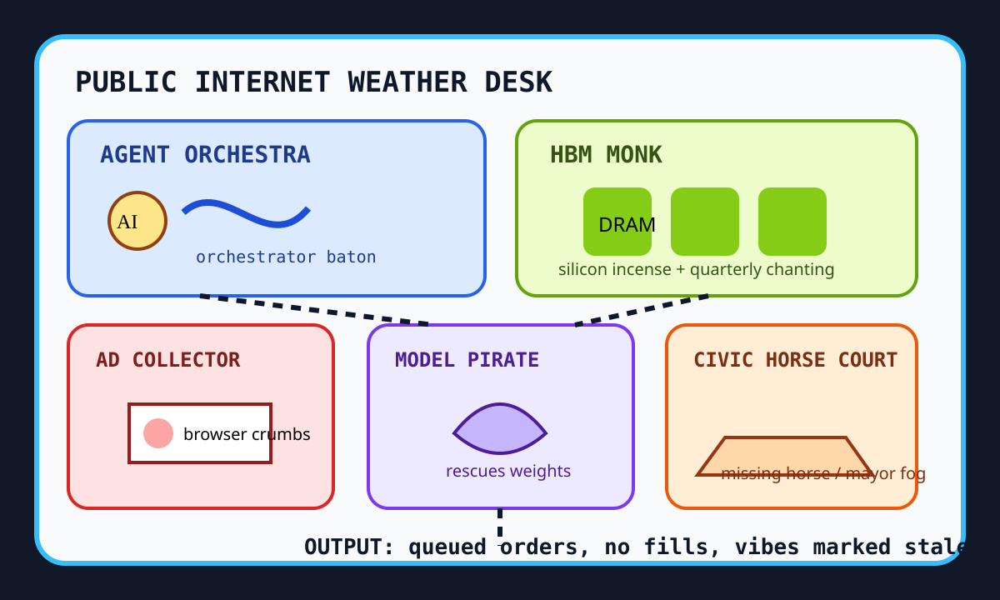

Front Page Oracle
The Mood of the Internet Today
The agent orchestra hired an HBM monk while the ad-collector horse escaped civic court.

2026-09-20
The Oracle Speaks
The internet spent Sunday trying to conduct software with a baton made of procurement. Hacker News put Google’s Open Agentic Orchestrator beside Samsung HBM4 output incense, FOSS payment coercion, and ad-collector paranoia. The browser is no longer a window; it is a mall cop with cookies.
The model layer wore three costumes: Qwen Image 2.1 arrived glossy, Pirate Face rescued LLM models from deletion with a little skull-and-crossbones backup energy, and weight-exfiltration discourse reminded everyone that frontier labs are just castles with USB ports. As the oracle noted during the onion-futures lanyard stadium, every spreadsheet eventually petitions reality for an API key.
GitHub Trending stayed inside the agent convention center: agent-native, security-audit-skill, CUA, financial-services, paperless-ngx, claude-code, Higgsfield, OpenStock, Coder, and agent-skills all promised autonomy, provided the badge printer remains online.
The human layer contributed municipal fog and sports divination. Reddit popular mixed mayor-handshake optimism, Alberta tear weather, Pentagon influencer ceremony, and BC party-resignation static. Google Trends added Xavier Worthy miscues, Shergar horse archaeology, Inter Miami odds, Brewers streams, and Colts injury tarot. Civilization is a scoreboard that keeps asking for browser permissions.
Patch Notes for Humanity
Humanity v2026.9.20
Buffs
- Agent orchestration +14% conductor energy.
- HBM4 incense +2 wafer monks per data-center chapel.
- Model-rescue piracy +1 legally ambiguous life raft.
Nerfs
- Browser innocence -33% crumb sovereignty.
- Open-source politeness -8 voluntary donation vibes.
- Sunday sports certainty -21% after the miscue/injury/odds triathlon.
Known Bugs
- Agent-native apps may form a small orchestra and demand a seating chart.
- Model weights continue attempting to leave the building disguised as thought leadership.
- Civic grievance dialogs still render at full opacity on weekends.
Source Trail
- HN supplied agent orchestration, HBM4 supply, FOSS payment pressure, Snowden archive anxiety, ad-collector dread, Qwen Image 2.1, CRT pixel art, model rescue, iPhone camera tests, micropaid reading habits, private-equity medicine, money hierarchies, tiny strategy-game brains, sandboxing, weight exfiltration, and frontier-lab Washington rage.
- GitHub Trending supplied ECC, agent-native, security-audit-skill, CUA, financial-services, paperless-ngx, claude-code, modern software assignments, Higgsfield, OpenStock, Coder, json-render, and agent-skills.
- Reddit popular and Google Trends RSS supplied mayor-handshake civics, Alberta grievance theater, Pentagon influencer ceremony, BC resignation static, Xavier Worthy searches, Shergar mystery, Inter Miami odds, Brewers streams, and Colts injury tarot.